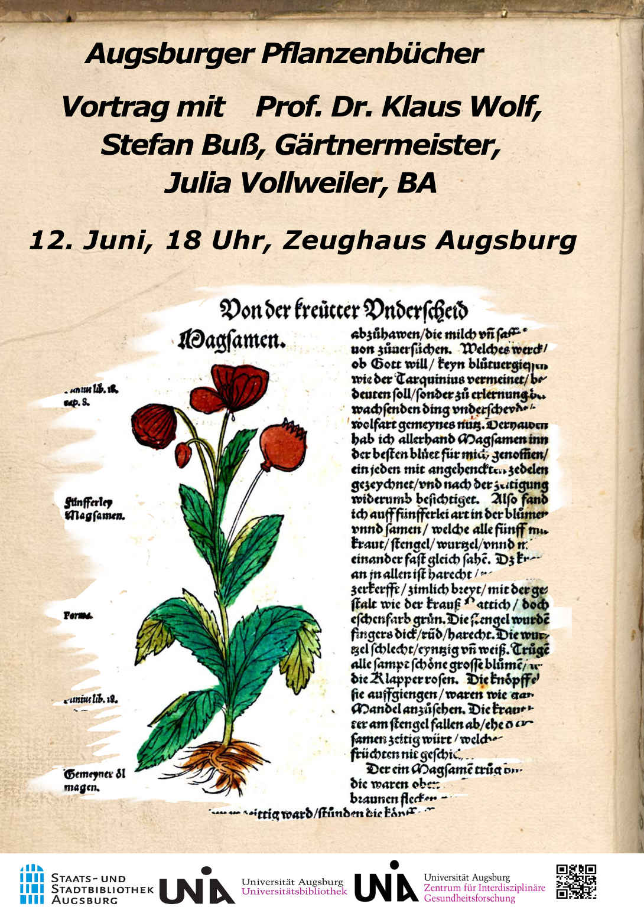

Willkommen
Willkommen zur Ausstellung "Augsburger Pflanzenbücher" vom 11. August bis 16. September. Auf unserer Homepage befinden sich aktuelle Termine zu Vorträgen und Führungen, sowie Informationen zur Ausstellung.
Aktuelle Termine für Vorträge und Führungen:
Di, 12.06.2018, 18 Uhr
Augsburger Gesundheitsdialog im Zeughaus: Vortrag von Prof. Dr. Klaus Wolf, Stefan Buß und Julia Vollweiler, BA
Sa, 11.08.2018, 10 Uhr
Botanischer Garten/ Gärtnerhalle: Beginn der Ausstellung und Führung von der Kuratorin Julia Vollweiler, BA
Sa, 01.09.2018
Vortrag von Prof. Dr. Klaus Wolf zum Renaissancefest im Botanischen Garten Augsburg
Rückblicke unseres Vortrags im Juni:

Fotos: Peter Neidlinger, Fotostelle Universität Augsburg
Herzliche Einladung zum öffentlichen Vortrag am 12. Juni 
Neugierig?
Die Ausstellung ist ein interdisziplinäres Projekt zwischen dem Botanischen Garten Augsburg und der Universität Augsburg. Von der Stadt- und Staatsbibliothek und der Universitätsbibliothek bekamen wir verschiedene Kräuter- und Pflanzenbücher vom Mittelalter bis in die Vormoderne zur Verfügung gestellt. Natürlich können keine Originale ausgestellt werden, dafür digitalisierte Versionen.
Im Durchschnitt wurden pro Buch zwischen 600 und 800 Seiten digitalisiert, weshalb in der Ausstellung nur Buchauszüge auf Banner vorgestellt werden können.
Öffnungszeiten
01.05–15.08
16.08–15.09
16.09–15.10
16.08–15.09
16.09–15.10
09:00–21:00 Uhr
09:00–20:00 Uhr
09:00–18:00 Uhr
09:00–20:00 Uhr
09:00–18:00 Uhr
Kassen- und Einlassschluss 45 Minuten vor Ende der Öffnungszeiten
Es gelten die Eintrittspreise des Botanischen Garten Augsburg
Anfahrt
So gelangt ihr zur Ausstellung:
Anschrift
Botanischer Garten
Dr.-Ziegenspeck-Weg 10
86161 Augsburg
Anbindung zum Augsburger Verkehrsverbund